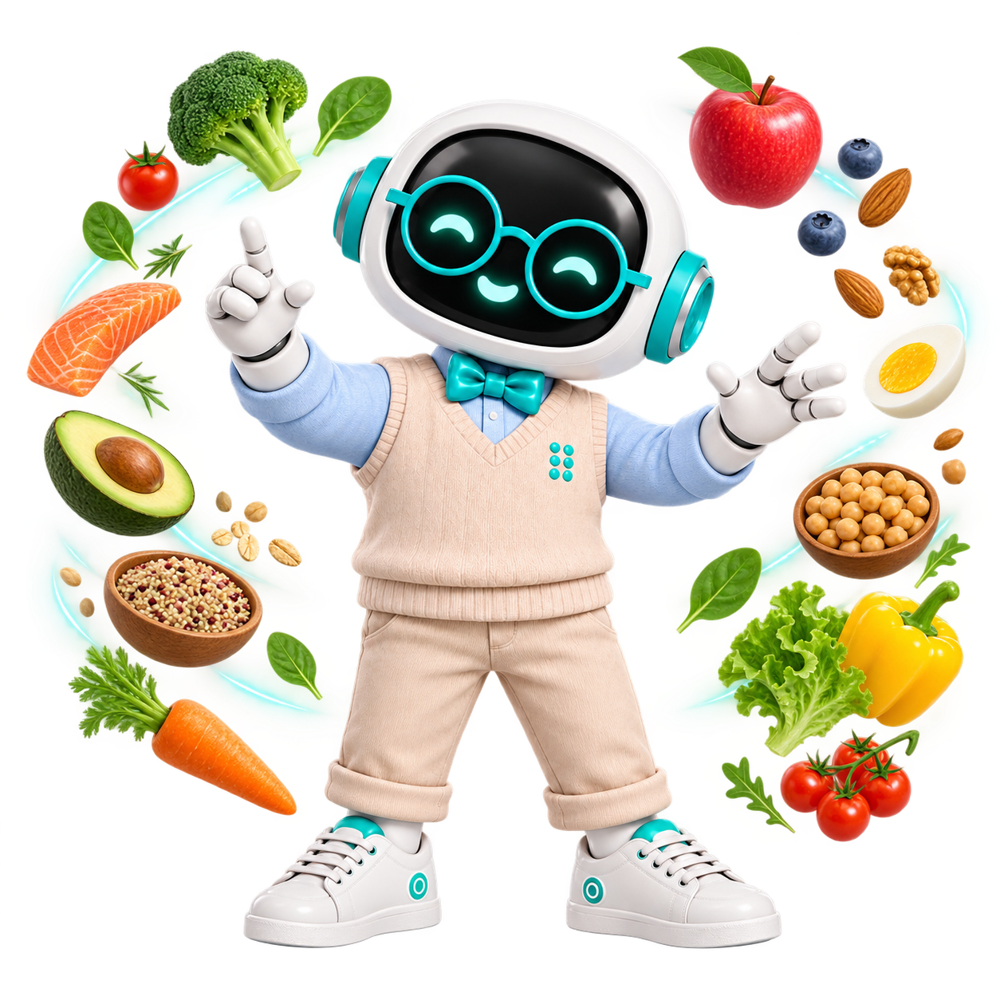

Небольшие шаги, которые легко встроить в день
Питание
Задайте рациону свой ритм
Ведите дневник, ставьте цели и получайте персональный план питания с учётом вашей активности и потребностей
Скачать Предикс.Здоровье
Три простых шага
Записи за пару секунд
Одно фото
Можно отдельно каждую булочку, а можно сразу весь поднос
Распознавание
ИИ сам определит состав и рассчитает среднее КБЖУ
Дневник
Запись можно отредактировать в любое время
Больше, чем дневник
Персональная цель с учётом привычек
Приложение анализирует не только рацион, но и ваши особенности и активность, чтобы спланировать каждый шаг на пути к цели
Параметры
Возраст, пол, рост и вес
Активность
День на диване или на ногах — не одно и то же
Ваша цель
Сбросить, набрать или держать
Мой профильРост 172 смВес 68 кгАктивность СредняяПоддерживать вес
Рекомендации
Узнать себя лучше
Пройдите научный тест на 10 вопросов, получите персональные рекомендации по рациону и примените их во время следующего приёма пищи
Это поможет дольше сохранять энергию
Сделайте первый шаг
Добавьте первую запись
Узнайте лучше свои привычки